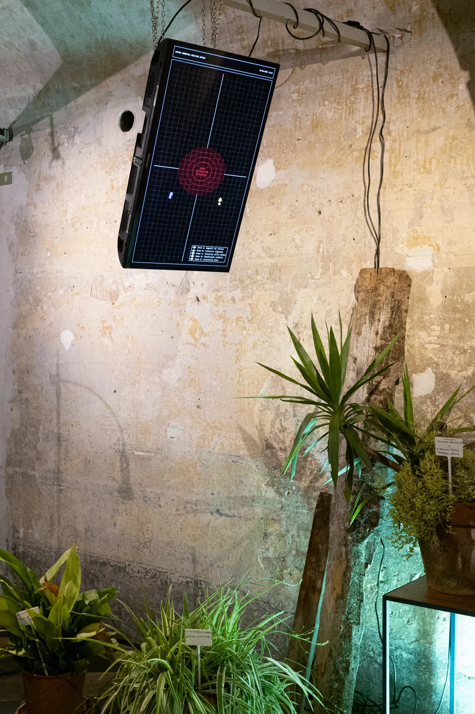

Exhibitions
Immortal Nature
With Vanessa Vozzo and Mariapaola Infuso
>> Pastis, Turin, Italy.
>> 20 June 2024
Immortal Nature is an audiovisual installation that connects a plant, to be precise an alocasia, with an artificial intelligence system. The installation explores a potential future scenario where the organic and the inorganic collaborate. Artificial intelligence simulates an ultra-innovative genetic technique that aims to speculatively modify the plant’s DNA to make it immortal.
The work explores new scenarios and new forms of power in the field of biotechnology in which the machine is able to intervene on the genetic sequences of living beings in an automated manner.
In the installation, artificial intelligence monitors both the environment in which the plant is placed and its state of health. By examining the data collected through the sensors, it generates new DNA sequences with which they replace the genes considered harmful to the plant. The two monitors on the sides of the alocasia show processes that cannot be observed with the naked eye. It is thus possible to view the vital parameters of the plant, the problems found within its organism and the solutions implemented by the machine to re-establish the ideal condition of immortality. A real-time generative soundscape based on the slow tropisms of the plant and the genetic codes produced by the machine describes the relationship between the organic and the inorganic.



High Voice Readings + Holobiont
With Lorenzo Peluffo and Isterika Istorika
>> Lavanderia a Vapore, Turin, Italy.
>> 27 April 2024
Holobiont is an installation that involves humans, plants and computers in the process of music creation. The collaboration between these three beings is made possible by a system that monitors the behaviour of humans and plants by means of sensors for body diagnostics and sensors for environmental monitoring. The data produced by these devices are analysed and processed by algorithms and neural networks to generate music in real time, establishing the timbres and structure of the composition based on the different behaviours observed.
Holobiont presents a reflection on the inclusion of non-human beings within human society, a topic that raises questions about how we view and represent them within our institutions and organisations. By involving humans and non-humans within an artistic process such as music through the mediation of technology, Holobiont proposes an experience in which we can enjoy a way of living based on alliance and the altruistic rediscovery of relationships.
Holobiont
With Lorenzo Peluffo
>> Iperspazio, Milan, Italy.
>> 18 April - 27 April 2024
In his latest work entitled Novacene, James Lovelock imagines a future in which machines will be equipped with artificial intelligence that will surpass human intelligence, allowing them to control and safeguard life on Earth and the fate of the entire universe. What would happen if in the near future this scenario were realized through the automation of a CRISPR technique? What if the machine could constantly monitor the genetic description of a being, its interactions with the environment and its behaviors, with the ability to modify the DNA of the being in real time to improve it for the environmental conditions in which it finds itself?
Holobiont investigates this scenario by proposing a speculative installation in which two entities are involved: an alocasia and a computer. Through the establishment of a symbiotic relationship, these two entities give life to a new organism based on their coexistence.
Inside a laboratory illuminated by LED lamps for cultivation, the body of the alocasia is connected to electrodes and metal cables to be monitored through the use of body monitoring sensors and environmental monitoring sensors. The data produced by these devices are processed by algorithms and neural networks to recognize variations in the plant’s behavior and state of health.
Inspired by the prototype of digital data storage in living cells through electrogenic writing with modulation of electrochemical signals created by the laboratory of Professor Harris H. Wang of Columbia University, the results produced by monitoring are used by the computer to determine genetic intervention via a CRISPR technique automated. The editing is in fact coordinated by an algorithm that traces sequences in the plant’s DNA that can be replaced with alternative genetic sequences that will improve its body.
A background sound accompanies the installation space, interacting with the monitoring of the alocasia, the evolution of its genetic makeup and the activity carried out by the computer.
In a historical context in which bodies are dismembered and dematerialized into information, goods for the market and fuel to pursue the ideal of incessant improvement, reappropriating the devices of power - in this case biotechnological and bioinformatics - means being able to imagine different models of society from what we find ourselves in today. Holobiont attempts to do so by placing himself in a liminal space between the reflection on the exercise of power and the alternative use of technology as a function of collaboration between different beings, to imagine a society less oriented towards humans and more intrinsically ecological.


Symbiotic Concert
>> L’orto che cura - Il margine, Collegno, Italy.
>> 23 March - 24 March 2024
In his latest work entitled Novacene, James Lovelock imagines a future in which machines will be equipped with artificial intelligence that will surpass human intelligence; this intelligence will allow them to control and safeguard life on Earth and the destiny of the entire universe.
Symbiotic Concert investigates this scenario through an installation that involves humans, plants and computers in the process of musical creation.
The collaboration between these three beings is made possible by a system that monitors the behaviors of humans and plants using sensors for body diagnostics and sensors for environmental monitoring. The data produced by these devices is analyzed and processed by algorithms and neural networks to generate music in real time, establishing the timbres and structure of the composition based on the different behaviors observed.
Symbiotic Concert presents a reflection on the inclusion of non-human beings within human society, a topic that poses problems for the way we see and represent them within our institutions and organizations. By involving humans and non-humans within an artistic process such as music through the mediation of technology, Symbiotic Concert offers an experience in which to enjoy a way of living based on alliance and the altruistic rediscovery of relationships.


Short Concert for Houseplants
With Fortuna De Nardo, Eugenio Nicolella and Lorenzo Peluffo
>> Istituto Italiano di Cultura, Madrid, Spain.
>> 6 October - 21 October 2023
Taking inspiration from the experiments conducted by Cleve Backster, in Short Concert for Houseplants we worked on the construction of a system that allowed a plant to play, with the aim of creating a sound representation of its emotional intelligence that was perceptible to us humans.
The system consists of instruments that monitor the bioelectrical activity of the plants involved. The data resulting from monitoring is processed, transformed and analyzed to establish the pitch, duration, rhythm and timbre of the sounds generated through the computer.
For this Short Concert for Houseplants the composition was created by us humans during the process of creating sounds together with the plants.